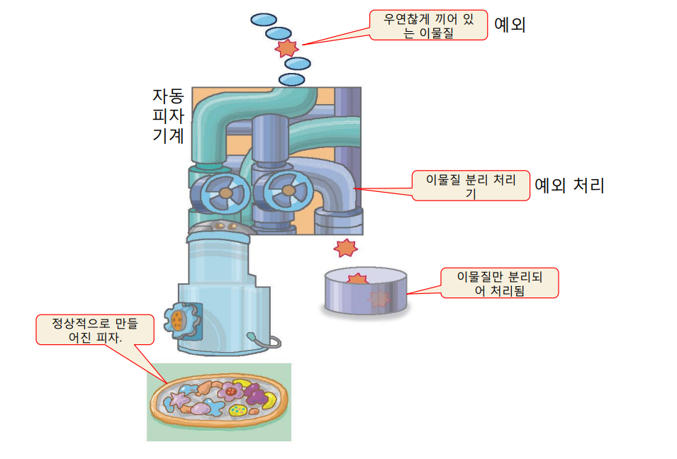
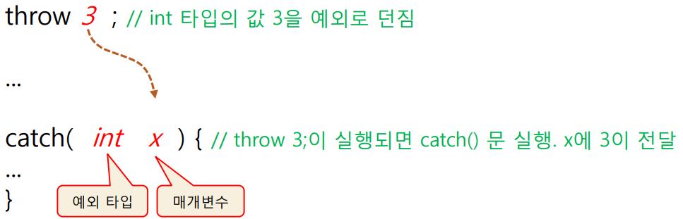
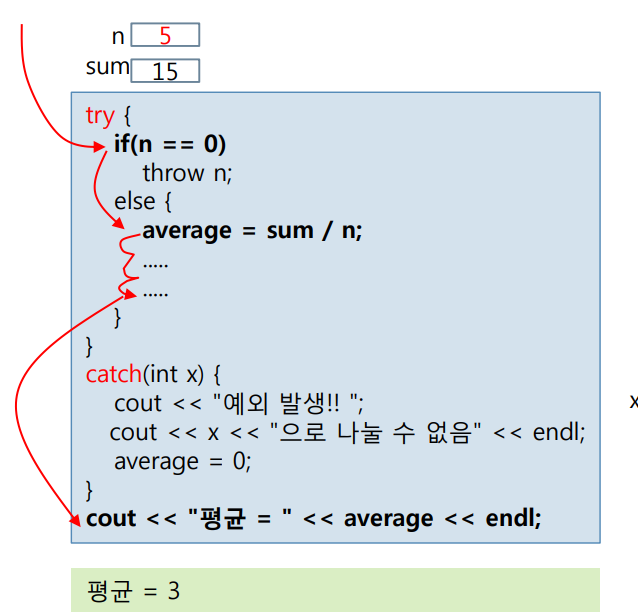
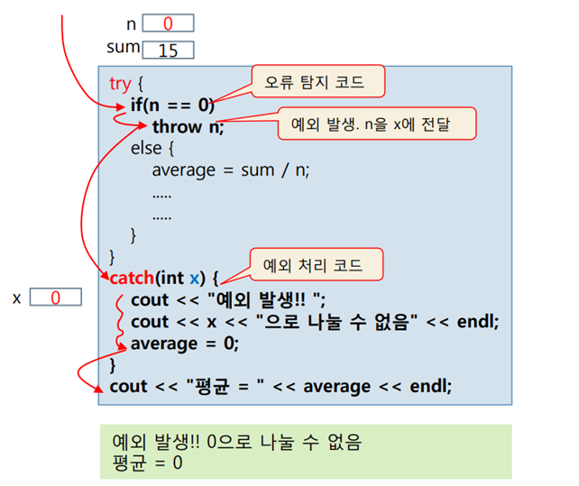
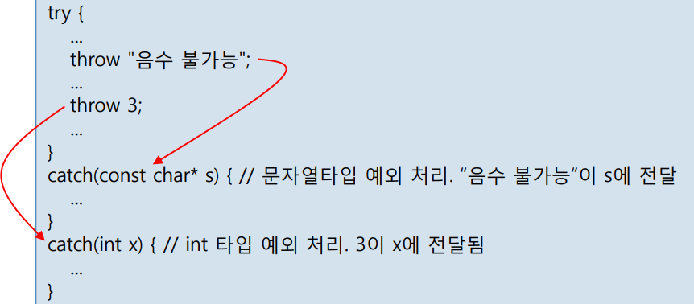
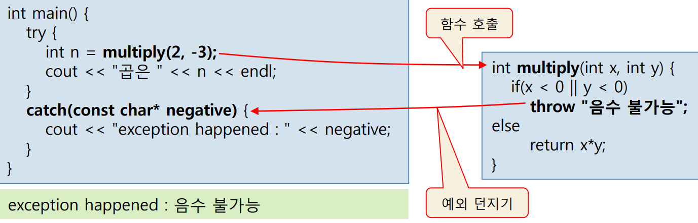
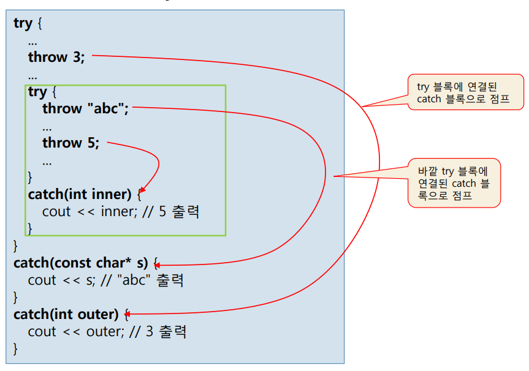

Chapter 17. 예외 처리¶
'명품 C++Programming - 황기태' 13장 학습 내용
1절. 오류 처리
2절. 예외
3절. 예외 클래스
1절. 오류 처리¶
오류¶
- 컴파일 오류
- 문법에 맞지 않는 구문으로 인한 오류
-
실행 오류
-
개발자의 논리 오류
- 예외적으로 발생하는 입력이나 상황에 대한 대처가 없을 때 발생하는 오류
-
실행 오류의 결과
- 결과가 틀리거나 엉뚱한 코드 실행
- 프로그램이 비정상적으로 종료
-
예제 1. 예외 상황에 대한 대처가 없는 프로그램 예제
SourceCodeChecking -
예제 2. if문과 리턴을 통한 오류 처리 예제
SourceCodeChecking -
예제 3. 리턴 값과 참조 매개 변수를 통한 오류 처리 예제
SourceCodeChecking
2절. 예외¶
예외¶
- 실행 중에 프로그램 오동작이나 결과에 영향을 미치는 상황이 발생하는 경우
- ex) getExp() 함수에 예상치 못하게 사용자가 음수를 입력하여 2^-3을 1로 계산한 경우
예외 처리기¶
- 예외 발생을 탐지하고 예외를 처리하는 코드
- 잘못된 결과, 비정상적인 실행, 시스템에 의한 강제 종료를 방지
- ex) 마이크로프로세서의 인터럽트와 비슷한 역할
예외 처리 수준¶
- 운영 체제 수준 예외 처리
- 운영체제가 예외의 발생을 탐지하여 응용프로그램에게 알려주어 예외에 대처하게 하는 방식
- 운영체제마다 서로 다르므로 운영체제나 컴파일러 별로 예외 처리 라이브러리로 작성
- Java의 경우, JVM 혹은 라이브러리에서 탐지한 예외를 자바응용프로그램에게 전달
- 윈도우 운영체제는 탐지한 예외를 C/C++ 응용프로그램에게 알려줌
- 운영체제와 컴파일러에 의존적인 C++ 문법 사용
- 응용프로그램 수준 예외 처리
- 사용자의 잘못된 입력이나 없는 파일을 여는 등 응용프로그램 수준에서 발생하는 예외를 자체적으로 탐지하고 처리하는 방법
- C++ 예외 처리
C++ 예외 처리¶
- C++ 표준의 예외 처리
- 응용프로그램 수준 예외 처리
피자 자동 기계외 예외 처리개념¶

예외 처리 기본 형식¶
- try - throw - catch
- try { } 블록
- 예외가 발생할 가능성이 있는 코드를 묶음
- throw 문
- 발견된 예외를 처리하기 위해 예외 발생을 알리는 문장
- try { } 블록 내에서 이루어져야 함
- catch() { } 블록
- throw에 의해 발생한 예외를 처리하는 코드
try{ // 예외가 발생할 가능성이 있는 실행문 : try {} 블록
..................
throw xxx;
// 예외를 발견할 경우
// 예외 발생을 알리는 throw문 : xxx는 예외 값
}
catch( // 처리할 예외 파라미터 선언){ // catch {} 블록
// 예외 처리문
}
throw와 catch¶

try{
...
throw "음수 불가능";
// char* 타입의 예외 던지기
}
catch(const char* s){ // const char* 타입 예외 처리 : 예외 값은 "음수 불가능"이 s에 전달
...
cout << s;
// 음수 불가능 출력
}
try - throw - catch의 예외 처리 과정¶
- 예외가 발생하지 않은 경우

- 예외가 발생한 경우

- 예제 4. 0으로 나누는 예외 처리 예제
SourceCodeChecking
throw와 catch의 예¶
- 하나의 try { } 블록에 다수의 catch() { } 블록 연결

- 함수를 포함하는 try { } 블록

-
예제 5. 지수 승 계산을 예외 처리 코드로 재작성하는 예제
SourceCodeChecking -
예제 6. 문자열을 정수로 변환하는 예제
SourceCodeChecking
예외를 발생시키는 함수의 선언(여기부터 작성)¶
- 예외를 발생시키는 함수는 다음과 같이 선언 가능
- 함수 원형에 연이어 throw(예외 타입, 예외 타입, ...) 선언
int max(int x, int y) throw(int){
if(x < 0) throw x;
else if(y < 0) throw y;
else if(x > y) return x;
else return y;
}
double valueAt(double *p, int dex) throw(int, char*){
if(index < 0) throw "index out of bounds exception";
// char* 타입 예외 발생
else if(p == NULL) throw 0;
// int 타입 예외 발생
else return p[indedx];
}
-
장점
-
프로그램의 작동 명확
-
프로그램의 가독성 상승
-
예제 7. 예외 처리를 가진 스택 클래스 예제
SourceCodeChecking
다중 try { } 블록¶
- try { } 블록 내에 try { } 블록의 중첩 가능

throw 사용 시 주의 사항¶
- throw 문의 위치
- 항상 try { } 블록 안에서 실행
- 시스템이 abort() 호출, 강제 종료
- 예외를 처리할 catch()가 없으면 프로그램 강제 종료
try{
...
throw "aa";
// char* 타입의 예외를 처리할 catch(){} 블록이 없고
// double 타입의 예외를 처리할 catch(){} 블록만 존재하기 때문에 프로그램 종료
}
catch(double p){
...
}
- catch() { } 블록 내에도 try { } catch() { } 블록 선언 가능
try{
throw 3;
}
catch(int x){
try{
throw "aa";
// 아래의 catch(const char* p){} 블록에서 처리
}
catch(const char* p){
...
}
}
3절. 예외 클래스¶
예외 클래스 만들기¶
- 예외 값의 종류
- 기본 타입의 예외 값
- 정수, 실수, 문자열 등 비교적 간단한 예외 정보 전달
- 객체 예외 값
- 예외 값으로 객체를 던짐
- 예외 값으로 사용할 예외 클래스 작성 필요
-
예외 클래스
-
사용자는 자신만의 예외 정보를 포함하는 클래스 작성
-
throw로 객체를 던짐
- 객체가 복사되어 예외 파라미터에 전달
-
예제 8. 예외 클래스 작성 예제
SourceCodeChecking